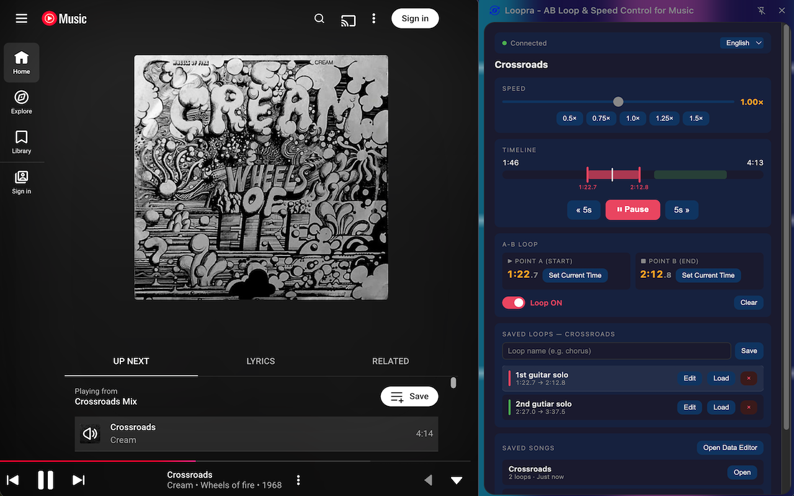

AB Loop & Speed Control for YouTube Music. Practice, study, and enjoy music your way.
Add to Chrome — It's Free
What Loopra does
Set a start point (A) and end point (B) to loop any section of a song endlessly. Perfect for ear training and learning by ear.
Slow down or speed up playback from 0.5× to 1.5× without affecting pitch. Ideal for transcription and practice.
Name and save multiple loops per song. They're stored locally in your browser and ready whenever you return.
All your saved loops are shown as colored ranges on a timeline. See and navigate your loops at a glance.
No accounts, no servers, no tracking. Your loops stay in your browser. Nothing ever leaves your device.
Open from Chrome's side panel — works alongside YouTube Music without interrupting what's playing.
Navigate to any song on music.youtube.com. The Loopra icon in your toolbar will turn active.
Click "Set Current Time" at point A, then again at point B — or drag the handles on the timeline directly.
Toggle the loop switch on. The section plays on repeat. Adjust A and B on the fly and hear changes instantly.
Give the loop a name and save it. It'll be there next time you open the song.